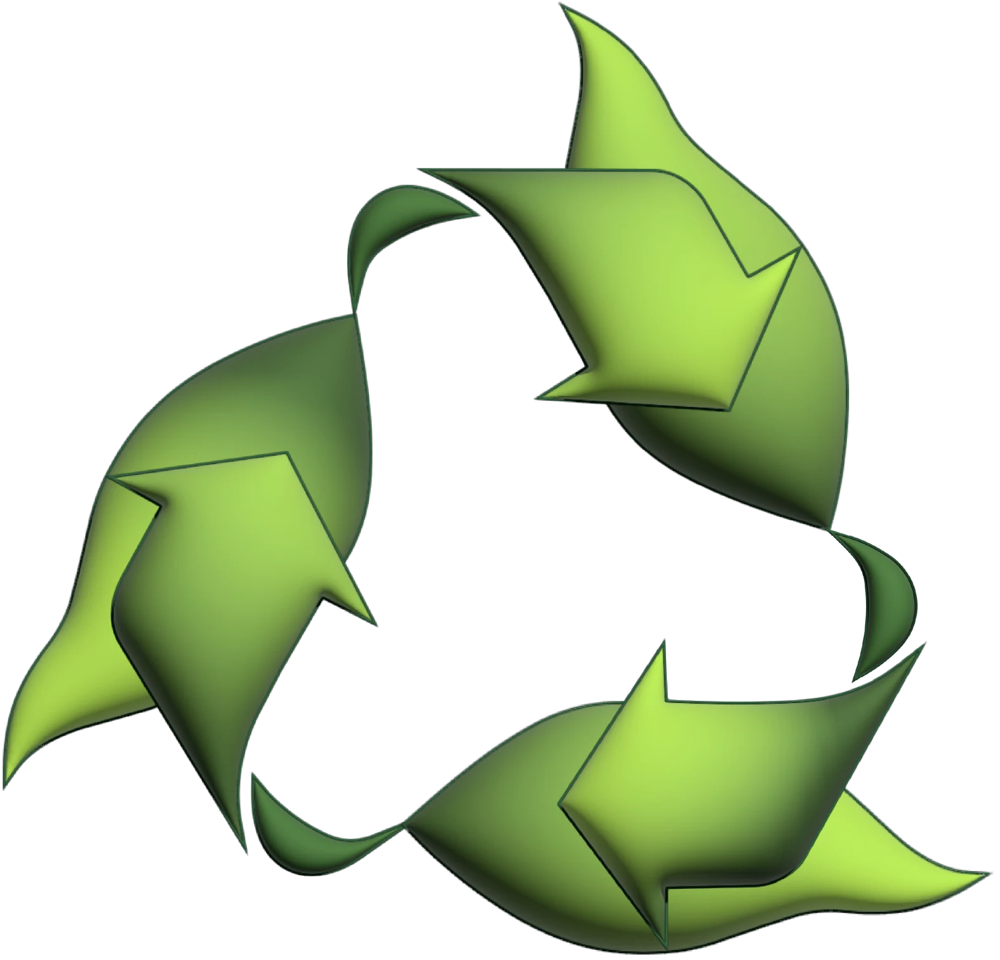
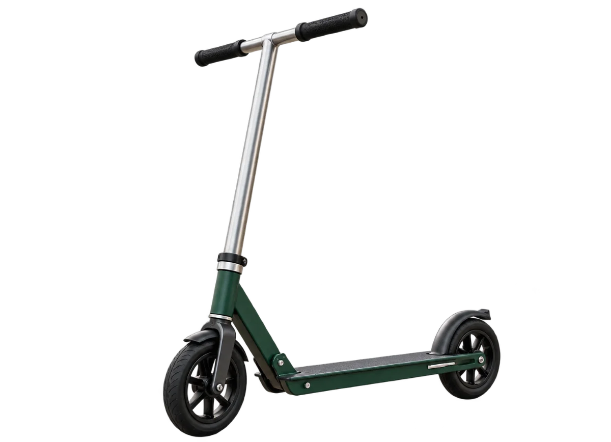

WERSJA ROBOCZA
Miejsce na oryginalny znak WFOŚiGW w Poznaniu i zatwierdzoną formułę dofinansowania. Materiały dostarczy autor.
Sprawa przerwanego obiegu
Eksperci GOZ
Rzeczy mają dalszy ciąg.
Co zrobić z przedmiotem, którego już nie używasz? Czy jedna usterka oznacza koniec całej rzeczy? I jak obierki mogą wrócić do ogrodu? Sprawdzisz to w sześciu zadaniach.
Około 60–70 minut. Możesz przerwać i wrócić.
Postęp zapisuje się w tej przeglądarce. Na wspólnym komputerze po skończeniu wybierz „Zacznij od nowa”.
